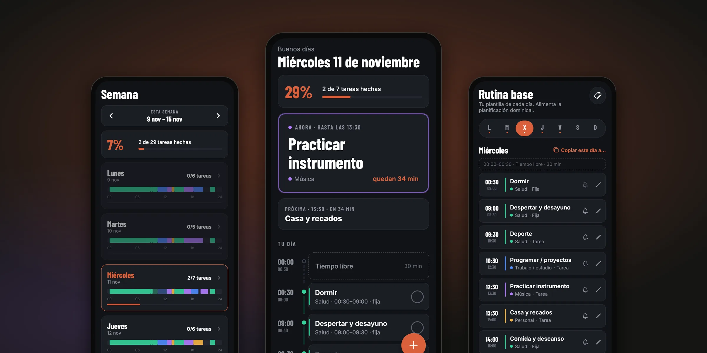
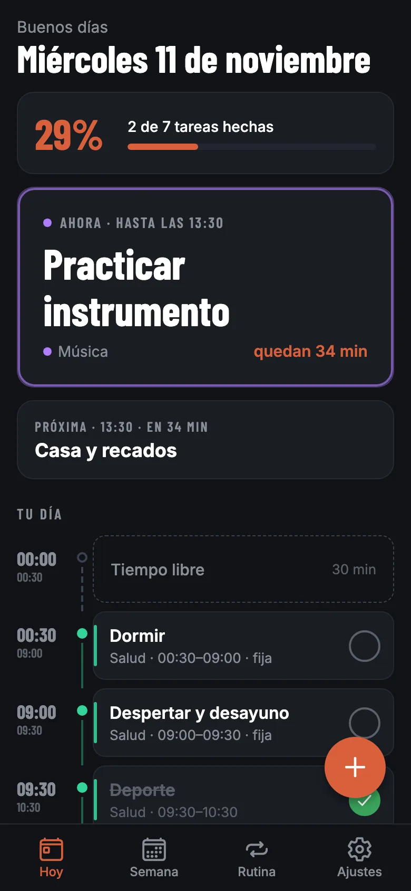
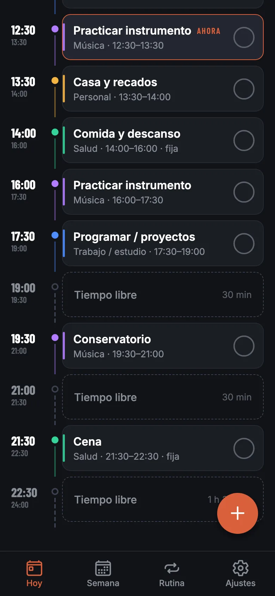
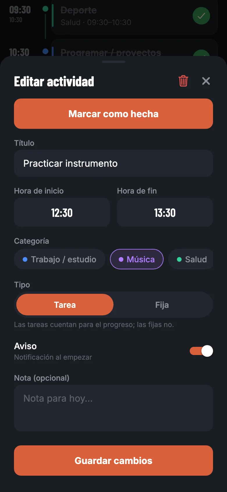
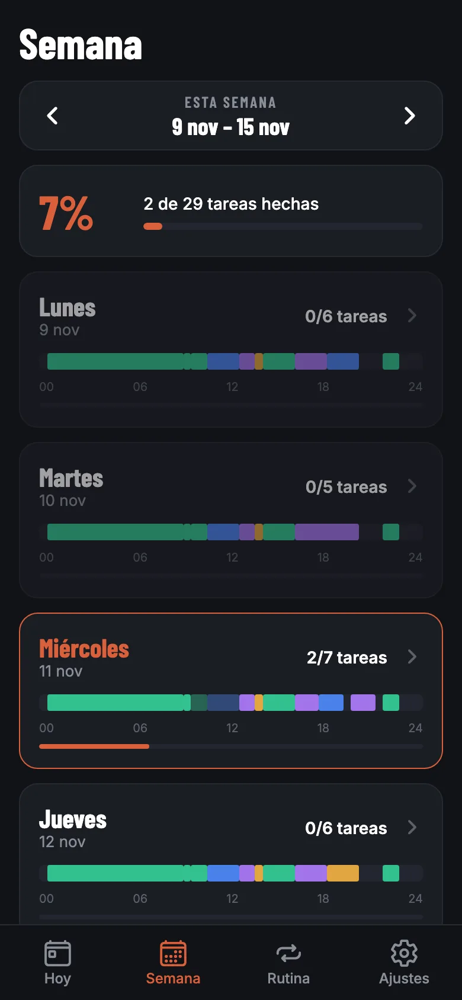
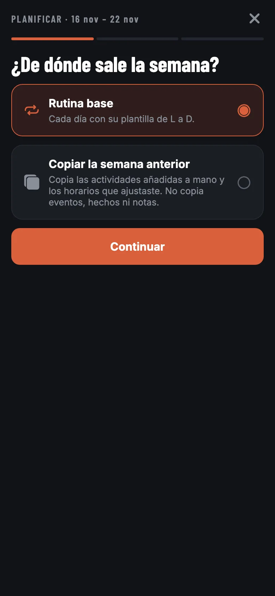
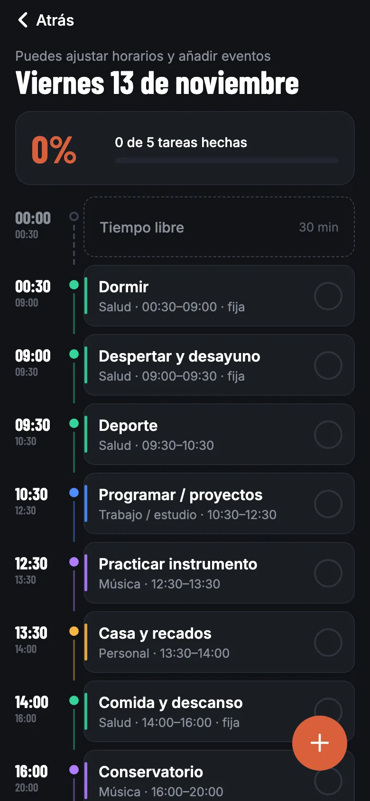
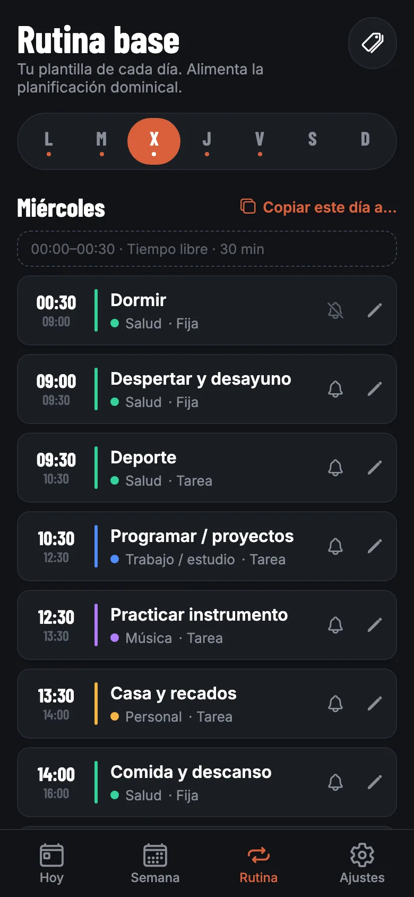
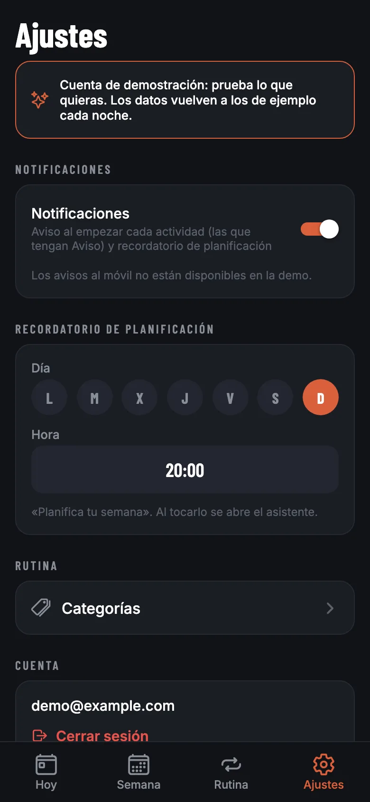

Ahora y después
Actividad en curso con cuenta atrás, la siguiente y el progreso del día. Los huecos aparecen solos como «Tiempo libre».
Nov 2026 · En solitario · En uso diario
App de rutina diaria con planificación dominical: en cada momento, qué toca ahora y qué viene después.
Cuenta de demostración: demo@example.com · midia-demo-2026. También con el botón «Probar la demo» del inicio de sesión; los datos vuelven a los de ejemplo cada noche.

Mi Día organiza el día en bloques a partir de una rutina base por día de la semana. Cada domingo se planifica la semana siguiente y, durante el día, la vista Hoy muestra la actividad en curso con su cuenta atrás, la siguiente y el progreso de las tareas.
Está escrita en TypeScript con Expo y React Native, así que el mismo código compila para iOS, Android y web. La uso a diario como app web instalable (PWA) en el iPhone, desplegada en Vercel, con Supabase (Postgres, Auth, Realtime y Edge Functions) como backend.
Actividad en curso con cuenta atrás, la siguiente y el progreso del día. Los huecos aparecen solos como «Tiempo libre».
Una plantilla por día de la semana. Cada domingo un asistente genera la semana siguiente desde la rutina o copiando la anterior.
Un ensayo o una cita recorta, parte o sustituye lo que pise de la rutina, y se puede restaurar el día con un toque.
Sincronización casi en tiempo real (OAuth + webhooks de Google) de los calendarios elegidos, en solo lectura.
Notificación al empezar cada actividad, enviada desde el servidor por un cron, también con la app cerrada en el iPhone.
Service worker y caché de la última lectura para abrirla sin red, y una consola de administración con usuarios y estadísticas.
pg_cron.time + date en Europe/Madrid, formato 24 h y semanas de lunes a domingo..web.tsx donde la plataforma lo exige.Capturas de la app en producción con la cuenta de demostración. Pulsa una para ampliarla.







